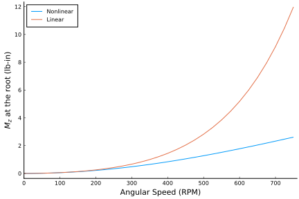
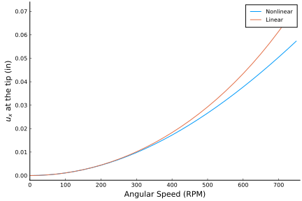
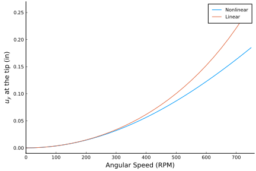

Getting Started
In this guide we introduce you to the functionality of this package in a step by step manner. This is a good starting point for learning about how to use this package. For more details about how to use a particular function the Public API is likely a better resource. For more examples of how to use this package see the examples.
If you haven't yet, now would be a good time to install GEBT. GEBT can be installed from the Julia REPL by typing ] (to enter the package manager) and then running the following command.
pkg> add https://github.com/byuflowlab/GEBT.jlNow, that the package is installed we need to load it so that we can use it. It's also often helpful to load the LinearAlgebra package.
using GEBT, LinearAlgebraThe geometry we will be working with is a rotating beam with a swept tip as pictured.

This geometry has a fixed boundary condition on the left side of the beam and rotates around a point 2.5 inches to the left of the beam. We will investigating the steady behavior of this system for a variety of RPM settings at a constant sweep of 45°.
Creating an Assembly
The first step for any analysis is to create an object of type Assembly. This object stores the properties of each of the points and beam elements in our model.
To create an object of type Assembly we need the following:
- An array of points
- The starting point for each beam element
- The ending point for each beam element
- The stiffness or compliance matrix for each beam element
- The mass or inverse mass matrix for each beam element (for dynamic simulations)
- Rotation matrices for each beam element which transform from the global frame to the undeformed local beam frame.
In case the beam elements are curved we can also manually provide the length and midpoint of each beam element. This is not necessary for straight beam elements.
We will first focus on the geometry. We start by defining the straight section of the beam. This section extends from (2.5, 0, 0) to (34, 0, 0). Its local undeformed coordinate frame is the same as the global coordinate frame. We will discretize this section into 10 elements.
To aid with constructing the geometry we can use the discretize_beam function. Here we will pass in the length, starting point, and number of elements. The function returns the lengths, endpoints, midpoints, and frame of each beam element.
# straight section of the beam
L_b1 = 31.5 # length of straight section of the beam in inches
r_b1 = [2.5, 0, 0] # starting point of straight section of the beam
nelem_b1 = 10 # number of elements in the straight section of the beam
lengths_b1, xp_b1, xm_b1, Cab_b1 = discretize_beam(L_b1, r_b1, nelem_b1)The lengths of each beam element is equal since we used the number of elements to define the discretization. Alternatively we can manually specify the discretization of the section. The following is equivalent to the previous function call.
disc_b1 = range(0, 1, length=nelem_b1+1) # normalized discretization in straight section of the beam
lengths_b1, xp_b1, xm_b1, Cab_b1 = discretize_beam(L_b1, r_b1, disc_b1)We will now create the geometry for the swept portion of the wing. To do so we use the same discretize_beam function, with an additional argument that allows us to specify a rotation matrix which transforms from the global frame to the undeformed frame of the starting point of this beam section.
sweep = 45 * pi/180
# swept section of the beam
L_b2 = 6 # length of swept section of the beam
r_b2 = [34, 0, 0] # starting point of swept section of the beam
nelem_b2 = 5 # number of elements in swept section of the beam
cs, ss = cos(sweep), sin(sweep)
frame_b2 = [cs ss 0; -ss cs 0; 0 0 1] # transformation matrix from global to local frame
lengths_b2, xp_b2, xm_b2, Cab_b2 = discretize_beam(L_b2, r_b2, nelem_b2, frame=frame_b2)If either of these beam sections were curved we would have also had to pass in a curvature vector to discretize_beam.
We will now manually combine the results of our two calls to discretize_beam. Since the last endpoint from the straight section is the same as the first endpoint of the swept section we drop one of the endpoints when combining our results.
# combine elements and points into one array
nelem = nelem_b1 + nelem_b2 # total number of elements
points = vcat(xp_b1, xp_b2[2:end]) # all points in our assembly
start = 1:nelem_b1 + nelem_b2 # starting point of each beam element in our assembly
stop = 2:nelem_b1 + nelem_b2 + 1 # ending point of each beam element in our assembly
lengths = vcat(lengths_b1, lengths_b2) # length of each beam element in our assembly
midpoints = vcat(xm_b1, xm_b2) # midpoint of each beam element in our assembly
Cab = vcat(Cab_b1, Cab_b2) # transformation matrix from global to local frame for each beam element in our assemblyNext we need to define the stiffness (or compliance) and mass (or inverse mass) matrices for each beam element.
The compliance matrix is defined according to the following equation
with the variables defined as follows:
- $\gamma_{11}$: beam axial strain
- $2\gamma_{12}$ engineering transverse strain along axis 2
- $2\gamma_{13}$ engineering transverse strain along axis 3
- $\kappa_1$: twist
- $\kappa_2$: curvature about axis 2
- $\kappa_3$: curvature about axis 3
- $F_i$: resultant force about axis i
- $M_i$: resultant moment about axis i
The elements of the mass matrix are defined as:
with the variables defined as follows:
- $\mu$: mass per unit length
- $(x_{m2}, x_{m3})$: location of mass center
- $i_{22}$: mass moment of inertia about axis 2
- $i_{33}$: mass moment of inertia about axis 3
- $i_{23}$: product of inertia
We assume that our beam has a constant cross section with the following properties:
- 1 inch width
- 0.063 inch height
- 1.06 x 10^7 lb/in^2 elastic modulus
- 0.325 Poisson's ratio
- 2.51 x 10^-4 lb sec^2/in^4 density
We also assume the following shear and torsion correction factors:
- ky = 1.2000001839588001
- kz = 14.625127919304001
- kt = 65.85255016982444
# cross section
w = 1 # inch
h = 0.063 # inch
# material properties
E = 1.06e7 # lb/in^2
ν = 0.325
ρ = 2.51e-4 # lb sec^2/in^4
# shear and torsion correction factors
ky = 1.2000001839588001
kz = 14.625127919304001
kt = 65.85255016982444
A = h*w
Iyy = w*h^3/12
Izz = w^3*h/12
J = Iyy + Izz
# apply corrections
Ay = A/ky
Az = A/kz
Jx = J/kt
G = E/(2*(1+ν))
compliance = fill(Diagonal([1/(E*A), 1/(G*Ay), 1/(G*Az), 1/(G*Jx), 1/(E*Iyy), 1/(E*Izz)]), nelem)
mass = fill(Diagonal([ρ*A, ρ*A, ρ*A, ρ*J, ρ*Iyy, ρ*Izz]), nelem)Our case is simple enough that we can analytically calculate most values for the compliance and mass matrices, but this is not generally the case. For more complex geometries/structures it may be necessary to use a cross-sectional property solver such as PreComp or VABS.
Also note that any row/column of the stiffness and/or compliance matrix which is zero will be interpreted as infinitely stiff in that degree of freedom. This corresponds to a row/column of zeros in the compliance matrix.
We are now ready to put together our assembly.
assembly = Assembly(points, start, stop, compliance=compliance, mass=mass, frames=Cab, lengths=lengths, midpoints=midpoints)At this point this is probably a good time to check that the geometry of our assembly is correct. We can do this by visualizing the geometry in ParaView. We can use the write_vtk function to do this. Note that in order to visualize the generated file yourself you will need to install ParaView separately.
write_vtk("swept-tip", assembly)
Defining Distributed Loads
We won't be applying distributed loads to our model, but will demonstrate how to do so.
Distributed loads are defined by using the constructor DistributedLoads. One instance of DistributedLoads must be created for every beam element on which the distributed load is applied. These instances of DistributedLoads are then stored in a dictionary in which they are accessed by their beam element index.
To define a DistributedLoad the assembly, element number, and distributed load functions must be passed to distributed_loads. Possible distributed load functions are:
fx: Distributed non-follower force on beam element in x-directionfy: Distributed non-follower force on beam element in y-directionfz: Distributed non-follower force on beam element in z-directionmx: Distributed non-follower moment on beam element in x-directionmy: Distributed non-follower moment on beam element in y-directionmz: Distributed non-follower moment on beam element in z-directionfx_follower: Distributed follower force on beam element in x-directionfy_follower: Distributed follower force on beam element in y-directionfz_follower: Distributed follower force on beam element in z-directionmx_follower: Distributed follower moment on beam element in x-directionmy_follower: Distributed follower moment on beam element in y-directionmz_follower: Distributed follower moment on beam element in z-direction
By default these functions are specified as functions of the arbitrary coordinate s ($f(s)$), however, if more than one time step is used in the simulation these functions are specified as a function of the arbitrary coordinate s and time t ($f(s,t)$).
One can specify the s-coordinate at the start and end of the beam element using the keyword arguments s1 and s2.
For example, the following code applies a uniform 10 pound distributed load in the global z-direction on all beam elements:
distributed_loads = Dict()
for ielem in 1:nelem
distributed_loads[ielem] = DistributedLoads(assembly, ielem; fz = (s) -> 10)
endTo instead make this a follower force (a force that rotates with the structure) we would use the following code:
distributed_loads = Dict()
for ielem in 1:nelem
distributed_loads[ielem] = DistributedLoads(assembly, ielem; fz_follower = (s) -> 10)
endThe units are arbitrary, but must be consistent with the units used when constructing assembly. Also note that both non-follower and follower forces may exist simultaneously.
If we wanted to define the same follower force for a simulation with multiple time steps we would also need to provide temporal data. Assuming a step size of 0.01 seconds and 101 steps in the simulation (including the step to find the solution at time t=0.0) this would be done as follows:
dt = 0.01
nstep = 101
distributed_loads_multistep = Dict()
for ielem in 1:nelem
distributed_loads_multistep[ielem] = DistributedLoads(assembly, ielem, dt; nstep=101, fz = (s,t) -> 10)
endIt is worth noting that the distributed loads are integrated over each element when they are created using 4-point Gauss-Legendre quadrature. If more control over the integration is desired one may specify a custom integration method as described in the documentation for DistributedLoads.
Defining Prescribed Conditions
Whereas distributed loads are applied to beam elements, prescribed conditions are forces and/or displacement boundary conditions applied to points. One instance of PrescribedConditions must be created for every point on which prescribed conditions are applied. These instances of PrescribedConditions are then stored in a dictionary in which they are accessed by their point index.
PrescribedConditions may be either specified as a constant or as a function of time. Possible prescribed conditions include:
ux: Prescribed x-direction displacement of the pointuy: Prescribed y-direction displacement of the pointuz: Prescribed z-direction displacement of the pointtheta_x: Prescribed first Wiener-Milenkovic parameter of the pointtheta_y: Prescribed second Wiener-Milenkovic parameter of the pointtheta_z: Prescribed third Wiener-Milenkovic parameter of the pointFx: Prescribed force in x-direction applied on the pointFy: Prescribed force in y-direction applied on the pointFz: Prescribed force in z-direction applied on the pointMx: Prescribed moment about x-axis applied on the pointMy: Prescribed moment about y-axis applied on the pointMz: Prescribed moment about z-axis applied on the pointFx_follower: Prescribed follower force in x-direction applied on the pointFy_follower: Prescribed follower force in y-direction applied on the pointFz_follower: Prescribed follower force in z-direction applied on the pointMx_follower: Prescribed follower moment about x-axis applied on the pointMy_follower: Prescribed follower moment about y-axis applied on the pointMz_follower: Prescribed follower moment about z-axis applied on the point
One can apply both force and displacement boundary conditions to the same point, but one cannot specify a force and displacement condition at the same point corresponding to the same degree of freedom. If this is requested an error will result.
Here we create a fixed boundary condition on the left side of the beam.
# create dictionary of prescribed conditions
prescribed_conditions = Dict(
# root section is fixed
1 => PrescribedConditions(ux=0, uy=0, uz=0, theta_x=0, theta_y=0, theta_z=0)
)To do the same for a simulation with multiple time steps:
# create dictionary of prescribed conditions
dt = 0.01
nstep = 101
prescribed_conditions_multistep = Dict(
# root section is fixed
1 => PrescribedConditions(dt; nstep=nstep, ux=0, uy=0, uz=0, theta_x=0, theta_y=0, theta_z=0)
)We could have also specified ux, uy, uz, theta_x, theta_y, and theta_z as functions of time.
Pre-Initializing Memory for an Analysis
At this point we have everything we need to perform an analysis. However, since we will be performing multiple analyses using the same assembly we can save computational time be preallocating memory for the analysis. This can be done by constructing an object of type System. The constructor for this object requires that we provide the assembly, a list of points upon which point conditions are applied, and a flag indicating whether the system is static.
prescribed_points = [1, nelem+1]
static = false
system = System(assembly, prescribed_points, static)Performing an Analysis
We're now ready to perform our steady state analyses. This can be done by calling steady_state_analysis with the pre-allocated system storage, assembly, angular velocity, and the prescribed point conditions. We can also perform a linear analysis instead of a nonlinear analysis by using the linear keyword argument.
After each analysis we'll also construct an object of type AssemblyState so that we can save the results of each analysis prior to re-using the pre-allocated memory for the next analysis.
rpm = 0:25:750
linear_states = Vector{AssemblyState{Float64}}(undef, length(rpm))
for i = 1:length(rpm)
# global frame rotation
w0 = [0, 0, rpm[i]*(2*pi)/60]
# perform linear steady state analysis
_, converged = steady_state_analysis!(system, assembly,
angular_velocity = w0,
prescribed_conditions = prescribed_conditions,
linear = true)
linear_states[i] = AssemblyState(system, assembly, prescribed_conditions=prescribed_conditions)
end
reset_state!(system)
nonlinear_states = Vector{AssemblyState{Float64}}(undef, length(rpm))
for i = 1:length(rpm)
# global frame rotation
w0 = [0, 0, rpm[i]*(2*pi)/60]
# perform nonlinear steady state analysis
_, converged = steady_state_analysis!(system, assembly,
angular_velocity = w0,
prescribed_conditions = prescribed_conditions)
nonlinear_states[i] = AssemblyState(system, assembly, prescribed_conditions=prescribed_conditions)
endPost Processing
We can access the fields in each instance of AssemblyState in order to plot various quantities of interest. This object stores an array of objects of type PointState in the field points and an array of objects of type ElementState in the field elements.
The fields of PointState are the following:
u: displacementtheta: angular displacementF: externally applied forcesM: externally applied moments
The fields of ElementState are the following:
u: displacementtheta: angular displacementF: resultant forcesM: resultant momentsP: linear momentaH: angular momenta
To demonstrate how these fields can be accessed we will now plot the root moment and tip deflections.
using Plots
pyplot()
# root moment
plot(
xlim = (0, 760),
xticks = 0:100:750,
xlabel = "Angular Speed (RPM)",
yticks = 0.0:2:12,
ylabel = "\$M_z\$ at the root (lb-in)",
grid = false,
overwrite_figure=false
)
Mz_nl = [-nonlinear_states[i].points[1].M[3] for i = 1:length(rpm)]
Mz_l = [-linear_states[i].points[1].M[3] for i = 1:length(rpm)]
plot!(rpm, Mz_nl, label="Nonlinear")
plot!(rpm, Mz_l, label="Linear")
# x tip deflection
plot(
xlim = (0, 760),
xticks = 0:100:750,
xlabel = "Angular Speed (RPM)",
ylim = (-0.002, 0.074),
yticks = 0.0:0.01:0.07,
ylabel = "\$u_x\$ at the tip (in)",
grid = false,
overwrite_figure=false
)
ux_nl = [nonlinear_states[i].points[end].u[1] for i = 1:length(rpm)]
ux_l = [linear_states[i].points[end].u[1] for i = 1:length(rpm)]
plot!(rpm, ux_nl, label="Nonlinear")
plot!(rpm, ux_l, label="Linear")
# y tip deflection
plot(
xlim = (0, 760),
xticks = 0:100:750,
xlabel = "Angular Speed (RPM)",
ylim = (-0.01, 0.27),
yticks = 0.0:0.05:0.25,
ylabel = "\$u_y\$ at the tip (in)",
grid = false,
overwrite_figure=false
)
uy_nl = [nonlinear_states[i].points[end].u[2] for i = 1:length(rpm)]
uy_l = [linear_states[i].points[end].u[2] for i = 1:length(rpm)]
plot!(rpm, uy_nl, label="Nonlinear")
plot!(rpm, uy_l, label="Linear")
# rotation of the tip
plot(
xlim = (0, 760),
xticks = 0:100:750,
xlabel = "Angular Speed (RPM)",
ylabel = "\$θ_z\$ at the tip",
grid = false,
overwrite_figure=false
)
theta_z_nl = [4*atan(nonlinear_states[i].points[end].theta[3]/4) for i = 1:length(rpm)]
theta_z_l = [4*atan(linear_states[i].points[end].theta[3]/4) for i = 1:length(rpm)]
plot!(rpm, theta_z_nl, label="Nonlinear")
plot!(rpm, theta_z_l, label="Linear")   
We can also perform an eigenvalue analysis for the same problem. The setup is similar to that for a steady state simulation.
In the following block of code we define a function that performs an eigenanalysis for any sweep angle and revolution rate. The main difference between performing a steady state analysis versus an eigenvalue analysis is the use of the eigenvalue_analysis function. This function returns the modified system, the eigenvalues, a matrix of eigenvectors, and a convergence flag.
eigenanalysis = function(sweep, rpm, nev)
# straight section of the beam
L_b1 = 31.5 # inch
r_b1 = [2.5, 0, 0]
nelem_b1 = 20
lengths_b1, xp_b1, xm_b1, Cab_b1 = discretize_beam(L_b1, r_b1, nelem_b1)
# swept section of the beam
L_b2 = 6 # inch
r_b2 = [34, 0, 0]
nelem_b2 = 20
cs, ss = cos(sweep), sin(sweep)
frame_b2 = [cs ss 0; -ss cs 0; 0 0 1]
lengths_b2, xp_b2, xm_b2, Cab_b2 = discretize_beam(L_b2, r_b2, nelem_b2, frame=frame_b2)
# combine elements and points into one array
nelem = nelem_b1 + nelem_b2
points = vcat(xp_b1, xp_b2[2:end])
start = 1:nelem_b1 + nelem_b2
stop = 2:nelem_b1 + nelem_b2 + 1
lengths = vcat(lengths_b1, lengths_b2)
midpoints = vcat(xm_b1, xm_b2)
Cab = vcat(Cab_b1, Cab_b2)
# cross section
w = 1 # inch
h = 0.063 # inch
# material properties
E = 1.06e7 # lb/in^2
ν = 0.325
ρ = 2.51e-4 # lb sec^2/in^4
# shear and torsion correction factors
ky = 1.2000001839588001
kz = 14.625127919304001
kt = 65.85255016982444
A = h*w
Iyy = w*h^3/12
Izz = w^3*h/12
J = Iyy + Izz
# apply corrections
Ay = A/ky
Az = A/kz
Jx = J/kt
G = E/(2*(1+ν))
compliance = fill(Diagonal([1/(E*A), 1/(G*Ay), 1/(G*Az), 1/(G*Jx), 1/(E*Iyy), 1/(E*Izz)]), nelem)
mass = fill(Diagonal([ρ*A, ρ*A, ρ*A, ρ*J, ρ*Iyy, ρ*Izz]), nelem)
# create assembly
assembly = Assembly(points, start, stop, compliance=compliance, mass=mass, frames=Cab, lengths=lengths, midpoints=midpoints)
prescribed_conditions = Dict(
# root section is fixed
1 => PrescribedConditions(ux=0, uy=0, uz=0, theta_x=0, theta_y=0, theta_z=0)
)
w0 = [0, 0, rpm*(2*pi)/60]
# eigenvalues and right eigenvector matrix
system, λ, V, converged = eigenvalue_analysis(assembly,
angular_velocity = w0,
prescribed_conditions = prescribed_conditions,
nev=nev)
# process state
state = AssemblyState(system, assembly; prescribed_conditions=prescribed_conditions)
# process eigenstates
eigenstates = [AssemblyState(system, assembly, V;
prescribed_conditions=prescribed_conditions) for k = 1:nev]
# corresponding left eigenvector matrix
U = left_eigenvectors(system, λ, V)
# save system mass matrix
M = copy(system.M)
return state, eigenstates, λ, U, M, V, converged
endBeyond simply calculating eigenvalues and (right) eigenvectors, we performed a couple additional post-processing steps in this function. First, we constructed objects of type AssemblyState, which can help to interpret eigenvector data. Second, we calculated a left eigenvector matrix which satisfies the following M-orthonormal relationship:
Finally, we saved the mass matrix so that we can use it to establish mode-correlations.
We'll now perform eigenvalue analyses on a variety of combinations of sweep angles and revolution rates to see how changing these parameters affects the natural frequencies of the structure.
sweep = (0:2.5:45) * pi/180
rpm = [0, 500, 750]
nev = 30
state = Matrix{AssemblyState{Float64}}(undef, length(sweep), length(rpm))
eigenstates = Matrix{Vector{AssemblyState{ComplexF64}}}(undef, length(sweep), length(rpm))
λ = Matrix{Vector{ComplexF64}}(undef, length(sweep), length(rpm))
U = Matrix{Matrix{ComplexF64}}(undef, length(sweep), length(rpm))
M = Matrix{Matrix{ComplexF64}}(undef, length(sweep), length(rpm))
V = Matrix{Matrix{ComplexF64}}(undef, length(sweep), length(rpm))
for j = 1:length(rpm)
for i = 1:length(sweep)
state[i,j], eigenstates[i,j], λ[i,j], U[i,j], M[i,j], V[i,j], converged = eigenanalysis(sweep[i], rpm[j], nev)
end
end
frequency = [[imag(λ[i,j][k])/(2*pi) for i = 1:length(sweep), j=1:length(rpm)] for k = 2:2:nev]To identify each of the modes, we can visualize them using ParaView using the write_vtk function. If we visualize the first mode for the 45 degree sweep/750 RPM case, we can see that it corresponds to the first bending mode.
write_vtk("rotating-beam-45d-750rpm-bending-mode-1", assembly, state[end,end], λ[end,end][1],
eigenstates[end,end][1], mode_scaling=100.0)The same process may be used to identify all the other modes.

In addition to identifying modes manually, we can also correlate modes by using the M-orthonormal relationship between the left and right eigenvectors. To do so, we'll use the function correlate_eigenmodes. If modes are properly ordered, the correlation matrix (defined as $U_{i-1}M_{i}V_{i}$) passed to correlate_eigenmodes will be diagonally dominant, otherwise correlate_eigenmodes will find a row/column permutation that will make the matrix diagonally dominant, if possible. Here we'll do this for this our range of parameters.
U_p = copy(U[1,1])
for j = 1:length(rpm)
for i = 1:length(sweep)
# construct correlation matrix
C = U_p*M[i,j]*V[i,j]
# correlate eigenmodes
perm, corruption = correlate_eigenmodes(C)
# fix ordering of modes
eigenstates[i,j] = eigenstates[i,j][perm]
λ[i,j] = λ[i,j][perm]
U[i,j] = U[i,j][perm,:]
V[i,j] = V[i,j][:,perm]
# update previous left eigenvector matrix
U_p .= U[i,j]
end
# update previous left eigenvector matrix
U_p .= U[1,j]
end
frequency = [[imag(λ[i,j][k])/(2*pi) for i = 1:length(sweep), j=1:length(rpm)] for k = 2:2:nev]In this case these eigenmode correlations work, but remember that large changes in the underlying parameters (or just drastic changes in the eigenvectors themselves due to a small perturbation) can cause these automatic eigenmode correlations to fail.
To check our correlations, we can plot the frequency of the different eigenmodes against those found by Epps and Chandra in "The Natural Frequencies of Rotating Composite Beams With Tip Sweep".
names = ["First Bending Mode", "Second Bending Mode", "Third Bending Mode"]
indices = [1, 2, 4]
experiment_rpm = [0, 500, 750]
experiment_sweep = [0, 15, 30, 45]
experiment_frequencies = [
[1.4 1.8 1.7 1.6;
10.2 10.1 10.2 10.2;
14.8 14.4 14.9 14.7],
[10.3 10.2 10.4 10.4;
25.2 25.2 23.7 21.6;
36.1 34.8 30.7 26.1],
[27.7 27.2 26.6 24.8;
47.0 44.4 39.3 35.1;
62.9 55.9 48.6 44.8]
]
plot!([NaN, NaN], [NaN, NaN], color=:black, label="GEBT")
scatter!([NaN, NaN], [NaN, NaN], color=:black, label="Experiment (Epps and Chandra)")
for k = 1:length(indices)
plot(
title = names[k],
xticks = 0:15:45,
xlabel = "Sweep Angle (degrees)",
ylim = (0, Inf),
ylabel = "Frequency (Hz)",
grid = false,
overwrite_figure=false
)
for j = length(rpm):-1:1
plot!(sweep*180/pi, frequency[indices[k]][:,j], label="$(rpm[j]) RPM", color=j)
scatter!(experiment_sweep, experiment_frequencies[k][j,:],
label="", color=j)
end
plot!(show=true)
end
names = ["1T/5B", "5B/1T", "4B/1T"]
indices = [5, 7, 6]
experiment_frequencies = [
132.7 147.3 166.2 162.0
106.6 120.1 122.6 117.7;
95.4 87.5 83.7 78.8;
]
plot(
title = "Coupled Torsion-Bending Modes at 750 RPM",
xticks = 0:15:45,
xlabel = "Sweep Angle (degrees)",
ylim = (0, Inf),
ylabel = "Frequency (Hz)",
grid = false,
overwrite_figure=false
)
plot!([NaN, NaN], [NaN, NaN], color=:black, label="GEBT")
scatter!([NaN, NaN], [NaN, NaN], color=:black, label="Experiment (Epps and Chandra)")
for k = 1:length(indices)
plot!(sweep*180/pi, frequency[indices[k]][:,end], label=names[k], color=k)
scatter!(experiment_sweep, experiment_frequencies[k,:],
label="", color=k)
end
plot!(show=true)sys:1: MatplotlibDeprecationWarning: Passing the fontdict parameter of _set_ticklabels() positionally is deprecated since Matplotlib 3.3; the parameter will become keyword-only two minor releases later. sys:1: UserWarning: FixedFormatter should only be used together with FixedLocator sys:1: MatplotlibDeprecationWarning: Case-insensitive properties were deprecated in 3.3 and support will be removed two minor releases later sys:1: MatplotlibDeprecationWarning: Passing the fontdict parameter of _set_ticklabels() positionally is deprecated since Matplotlib 3.3; the parameter will become keyword-only two minor releases later. sys:1: UserWarning: FixedFormatter should only be used together with FixedLocator sys:1: MatplotlibDeprecationWarning: Case-insensitive properties were deprecated in 3.3 and support will be removed two minor releases later sys:1: MatplotlibDeprecationWarning: Passing the fontdict parameter of _set_ticklabels() positionally is deprecated since Matplotlib 3.3; the parameter will become keyword-only two minor releases later. sys:1: UserWarning: FixedFormatter should only be used together with FixedLocator sys:1: MatplotlibDeprecationWarning: Case-insensitive properties were deprecated in 3.3 and support will be removed two minor releases later sys:1: MatplotlibDeprecationWarning: Passing the fontdict parameter of _set_ticklabels() positionally is deprecated since Matplotlib 3.3; the parameter will become keyword-only two minor releases later. sys:1: UserWarning: FixedFormatter should only be used together with FixedLocator sys:1: MatplotlibDeprecationWarning: Case-insensitive properties were deprecated in 3.3 and support will be removed two minor releases later sys:1: MatplotlibDeprecationWarning: Passing the fontdict parameter of _set_ticklabels() positionally is deprecated since Matplotlib 3.3; the parameter will become keyword-only two minor releases later. sys:1: UserWarning: FixedFormatter should only be used together with FixedLocator sys:1: MatplotlibDeprecationWarning: Case-insensitive properties were deprecated in 3.3 and support will be removed two minor releases later sys:1: MatplotlibDeprecationWarning: Passing the fontdict parameter of _set_ticklabels() positionally is deprecated since Matplotlib 3.3; the parameter will become keyword-only two minor releases later. sys:1: UserWarning: FixedFormatter should only be used together with FixedLocator sys:1: MatplotlibDeprecationWarning: Case-insensitive properties were deprecated in 3.3 and support will be removed two minor releases later sys:1: MatplotlibDeprecationWarning: Passing the fontdict parameter of _set_ticklabels() positionally is deprecated since Matplotlib 3.3; the parameter will become keyword-only two minor releases later. sys:1: UserWarning: FixedFormatter should only be used together with FixedLocator sys:1: MatplotlibDeprecationWarning: Case-insensitive properties were deprecated in 3.3 and support will be removed two minor releases later sys:1: MatplotlibDeprecationWarning: Passing the fontdict parameter of _set_ticklabels() positionally is deprecated since Matplotlib 3.3; the parameter will become keyword-only two minor releases later. sys:1: UserWarning: FixedFormatter should only be used together with FixedLocator sys:1: MatplotlibDeprecationWarning: Case-insensitive properties were deprecated in 3.3 and support will be removed two minor releases later sys:1: MatplotlibDeprecationWarning: Passing the fontdict parameter of _set_ticklabels() positionally is deprecated since Matplotlib 3.3; the parameter will become keyword-only two minor releases later. sys:1: UserWarning: FixedFormatter should only be used together with FixedLocator sys:1: MatplotlibDeprecationWarning: Case-insensitive properties were deprecated in 3.3 and support will be removed two minor releases later sys:1: MatplotlibDeprecationWarning: Passing the fontdict parameter of _set_ticklabels() positionally is deprecated since Matplotlib 3.3; the parameter will become keyword-only two minor releases later. sys:1: UserWarning: FixedFormatter should only be used together with FixedLocator sys:1: MatplotlibDeprecationWarning: Case-insensitive properties were deprecated in 3.3 and support will be removed two minor releases later sys:1: MatplotlibDeprecationWarning: Passing the fontdict parameter of _set_ticklabels() positionally is deprecated since Matplotlib 3.3; the parameter will become keyword-only two minor releases later. sys:1: UserWarning: FixedFormatter should only be used together with FixedLocator sys:1: MatplotlibDeprecationWarning: Case-insensitive properties were deprecated in 3.3 and support will be removed two minor releases later sys:1: MatplotlibDeprecationWarning: Passing the fontdict parameter of _set_ticklabels() positionally is deprecated since Matplotlib 3.3; the parameter will become keyword-only two minor releases later. sys:1: UserWarning: FixedFormatter should only be used together with FixedLocator sys:1: MatplotlibDeprecationWarning: Case-insensitive properties were deprecated in 3.3 and support will be removed two minor releases later sys:1: MatplotlibDeprecationWarning: Passing the fontdict parameter of _set_ticklabels() positionally is deprecated since Matplotlib 3.3; the parameter will become keyword-only two minor releases later. sys:1: UserWarning: FixedFormatter should only be used together with FixedLocator sys:1: MatplotlibDeprecationWarning: Case-insensitive properties were deprecated in 3.3 and support will be removed two minor releases later sys:1: MatplotlibDeprecationWarning: Passing the fontdict parameter of _set_ticklabels() positionally is deprecated since Matplotlib 3.3; the parameter will become keyword-only two minor releases later. sys:1: UserWarning: FixedFormatter should only be used together with FixedLocator sys:1: MatplotlibDeprecationWarning: Case-insensitive properties were deprecated in 3.3 and support will be removed two minor releases later sys:1: MatplotlibDeprecationWarning: Passing the fontdict parameter of _set_ticklabels() positionally is deprecated since Matplotlib 3.3; the parameter will become keyword-only two minor releases later. sys:1: UserWarning: FixedFormatter should only be used together with FixedLocator sys:1: MatplotlibDeprecationWarning: Case-insensitive properties were deprecated in 3.3 and support will be removed two minor releases later sys:1: MatplotlibDeprecationWarning: Passing the fontdict parameter of _set_ticklabels() positionally is deprecated since Matplotlib 3.3; the parameter will become keyword-only two minor releases later. sys:1: UserWarning: FixedFormatter should only be used together with FixedLocator sys:1: MatplotlibDeprecationWarning: Case-insensitive properties were deprecated in 3.3 and support will be removed two minor releases later sys:1: MatplotlibDeprecationWarning: Passing the fontdict parameter of _set_ticklabels() positionally is deprecated since Matplotlib 3.3; the parameter will become keyword-only two minor releases later. sys:1: UserWarning: FixedFormatter should only be used together with FixedLocator sys:1: MatplotlibDeprecationWarning: Case-insensitive properties were deprecated in 3.3 and support will be removed two minor releases later sys:1: MatplotlibDeprecationWarning: Passing the fontdict parameter of _set_ticklabels() positionally is deprecated since Matplotlib 3.3; the parameter will become keyword-only two minor releases later. sys:1: UserWarning: FixedFormatter should only be used together with FixedLocator sys:1: MatplotlibDeprecationWarning: Case-insensitive properties were deprecated in 3.3 and support will be removed two minor releases later sys:1: MatplotlibDeprecationWarning: Passing the fontdict parameter of _set_ticklabels() positionally is deprecated since Matplotlib 3.3; the parameter will become keyword-only two minor releases later. sys:1: UserWarning: FixedFormatter should only be used together with FixedLocator sys:1: MatplotlibDeprecationWarning: Case-insensitive properties were deprecated in 3.3 and support will be removed two minor releases later sys:1: MatplotlibDeprecationWarning: Passing the fontdict parameter of _set_ticklabels() positionally is deprecated since Matplotlib 3.3; the parameter will become keyword-only two minor releases later.


As you can see, the frequency results from the eigenmode analysis in this package compare well with experimental results.